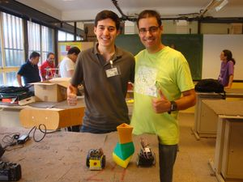

Ficha
Resumen
Los printbots (PRINTable roBOTS) son robots orientados a la comunidad, que se imprimen mediante una impresora 3D open-source. Primero se explica el contexto: la comunidad y algunas de sus propiedades, y el movimiento opensource. Luego se presentan las impresoras 3D opensource, y cómo en España está creciendo su número a través del proyecto Clone Wars. Posteriormente se presentan los printbots y se muestra cómo han evolucionado desde el último año (cambios desde la OSHWcon 2011). Al ser replicables fácilmente en cualquier parte del mundo, su crecimiento es imparable. Y la diversidad aumenta con el tiempo. Los printbots son excelentes plataformas para la educación e investigación.
Vídeo de la Charla
Descarga
Vídeos mostrados en la charla
- Vídeo 1: ¡Ansia viva! ¡Imprimiendo piezas del Domo para el reto de la OSHWcon!
- Vídeo 2: Primeras pruebas con el Protobot
- Vídeo 3: Miniskybots 2, al son de Paquito el chocolatero
- Vídeo 4: Moviendo el miniskybot 2 con el wiimote
- Vídeo 5: Probando HKTR-9000
- Vídeo 6: Probando el Skyball
- Vídeo 7: Rover cogiendo una lata de red-bull
- Vídeo 8: D-track superando un obstáculo
- Vídeo 9: Pruebas con el Mars rover
- Vídeo 10: El cuadrúpedo AT-AS en acción!
- Vídeo 11: Demostración del brazo robótico de 6 DOF
- Vídeo 12: Oruga de tres módulos moviéndose
- Vídeo 13: Demostración del water-oscillator
Fotos
|
|
|
 Carlos García Saura y Juan González-Gómez ( Click para ampliar)) |
|
Licencia
Artículos científicos
- Juan Gonzalez-Gomez, Alberto Valero-Gomez, Andres Prieto-Moreno, Mohamed Abderrahim (2011), A New Open Source 3D-printable Mobile Robotic Platform for Education, Proc. of the 6th International Symposium on Autonomous Minirobots for Research and Edutainment, May, 23-25. Bielefeld. Germany (PDF) (Más información)
|
- Alberto Valero-Gomez, Mario Almagro, Nieves Cubo-Mateo, Juan Gonzalez-Gómez, A new Paradigm in Open Robotics with the C++ Object Oriented Mechanics Library, IEEE RoboCity 2012 Manuscript (PDF)
|
- Juan Gonzalez-Gómez, Alberto Valero-Gomez, Mario Almagro, Miguel A. Salichs, Boosting Mechanical Design with the C++ Object Oriented Mechanics Library. Proc. of the 2012 IEEE int. conf. on Global Engineering Education Conference (EDUCON), 17-20 April, Morocco (PDF)
|
- Alberto Valero-Gomez, Juan Gonzalez-Gomez, Victor Gonzalez-Pacheco, Miguel Angel Salichs, Printable Creativity in Plastic Valley UC3M. Proc. of the 2012 IEEE int. conf. on Global Engineering Education Conference (EDUCON), 17-20 April, Morocco (PDF)
|
Más información
Sobre impresoras 3D
Sobre herramientas libres de diseño
- OpenScad: Herramienta libre para diseño de piezas
- Kicad: Herramienta libre para diseño de circuitos
- Freecad: Herramienta libre de CAD
- OOML: Object Oriented Mechanics. Mecánica orientada a Objetos
Electrónica (hardware libre 2)
Sobre printbots
Créditos
- Olalla Bravo y Daniel Gómez: robot Orugator
- Jon Goitia: Unitrack, 4track, Rover
- Julián Marín Mato: 4track
- Sliptonic: Scout I y II
- Nieves Cubo: Protobot (ruedas satánicas)
- Carlos García Saura: HKTR-9000 y ArduSkybot
- Miguel Angel de Frutos: Skyball y Water Oscillator
- Daniel González: D-track
- Mario Almagro: Mars Rover y Protobot
- Anita del Prado: Cuadrúpedo AT-AS
- Antonio Castro: Brazo robótico de 6 DOF
Si se me ha olvidado algún crédito, por favor, ponte en contacto conmigo (Obijuan)
Agradecimientos
- A toda la gente de Synusia por la organización de la OSHWcon. Sin vosotros esto no sería posible ¡Muchísimas gracias!
Noicias
- 24/Sep/2012: Primera versión publicada
- 23/Sep/2012: Comenzada esta página